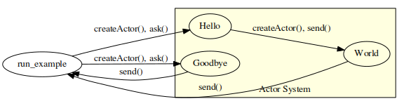
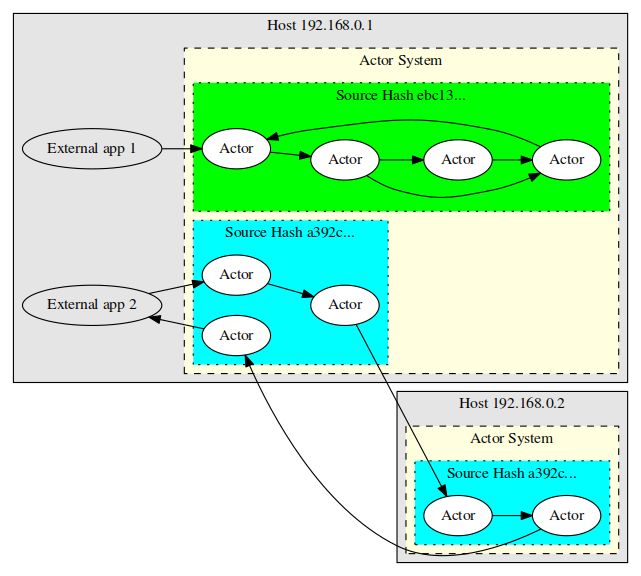

In-Depth Introduction
In-Depth Introduction
Table of Contents
1 Background
How do you design an application using Agile methodologies that will be capable of scaling to become a distributed application running across thousands of servers and handling thousands of customer requests per day? Especially when the application itself must be highly extensible and coordinate interaction with external services (many of which can be slow or unreliable at times)? Scalable systems design is one of the most common challenges facing modern software development. Scalable system design must address many difficult issues, including: fault tolerance and recovery, coordination, and even deployment synchronization.
There are many different approaches to this problem, but one simple yet very powerful approach has been used by GoDaddy's Hosting group: using an Actor Model. The Actor Model was conceived in MIT's Artificial Intelligence labs back in the mid 1970's but it has recently seen renewed interest because of the way it addresses development architecture.
Thespian is a Python library that enables Actor-based applications to be written to handle the challenges above. This document provides an in-depth introduction to writing Actor-based applications
GoDaddy uses the Python language for many of it's internal systems and has developed an Actor library for Python called Thespian to support this highly-scalable architecture. GoDaddy has open-sourced the Thespian library itself to share it with the community and allow others to leverage the Actor Model architecture for Python.
1.1 The Actor Model
The Actor Model itself is pretty simple, but it's the way that it frames the problem that creates big advantages. A program's code is divided into multiple different parts and each part runs as an Actor. Each Actor has an address, and Actors can exchange messages by sending a message to another Actor's address. Actors do not share state (i.e. memory), but they may maintain their own internal state.
Each Actor basically just hangs out until it gets a message. When it gets a message, it does one of three things:
- sends a finite number of messages
- creates a finite number of other Actors
- updates internal state
At first glance, that sounds pretty trivial, but the power of the Actor Model lies more in what is not described above: Actors do not have to spend time managing their environment, establishing and maintaining a communications framework to each other; there are no locks, semaphores, or other complex concurrency concerns. All of these things are handled by the Actor System (the framework in which the Actors run), and the Actors are freed to focus on the main concerns of the application.

Figure 1: Example Actor configuration
This external component, the Actor System, is the place where all of these mundane issues are handled. There are several different Actor System implementations available in different languages (e.g. Akka for Scala or Java, Thespian for Python). Although they differ somewhat in various details, they all provide a common set of features, including:
- Creating the actual Actor instances
- Handling message delivery from one Actor to another
- Managing Actor lifecycles
- Providing appropriate scheduling and concurrency between different Actors.
2 Thespian Features
2.1 Thespian Walk-Through
One of the first things you'll notice when writing Actor-based code is how easy it is to write code for.
- Environment
- While it is possible to provide configuration information to customize your setup, it is often not necessary to specify anything for a simple environment.
- Code
- Actors don't need lots of setup code and management. With many libraries, you simply include a module, subclass a base Actor object to define the Actor code, then create the Actor in a single library call.
To demonstrate how easy this is, let's look at an example using the Thespian Python Actor library.
2.1.1 Installation of Thespian
The Thespian Python library is available on github at
http://github.com/godaddy/Thespian, from http://pypi.python.org, or possibly
via a package provided for your OS. You should probably use the
latter if it's available, but otherwise just use pip for simplicity:
$ pip install thespian
This will place the thespian package in the standard python library
installation location. Thespian is supported for any version of
Python starting with 2.6, and has no required dependencies.
You may wish to additionally install the setproctitle library:
Thespian will make use of this if it is available to update the
process description of running Actors making it easier to identify
them in `ps' output.
2.1.2 Hello World
Let's start with the typical example of Hello World. In this case, we'll create an Actor, send it a message, wait for a response message, and print that response:
1: from thespian.actors import * 2: 3: class Hello(Actor): 4: def receiveMessage(self, message, sender): 5: self.send(sender, 'Hello, world!') 6: 7: def say_hello(): 8: hello = ActorSystem().createActor(Hello) 9: print(ActorSystem().ask(hello, 'are you there?', 1.5)) 10: 11: if __name__ == "__main__": 12: say_hello()
The above runs as follows:
$ python hello.py Hello World!
Which is as expected, but it's interesting to take a closer look at the code and resulting system state:
- Line 3 shows how the Hello class subclasses the standard
Actorbaseclass provided by thethespianimport. TheActorbaseclass provides methods for all of the actions that Actor might take that would interact with other Actors or the Actor System itself (see the Using Thespian documentation for more details).
- Line 4 is the main entry point into any Actor. It
is invoked (by the Actor System) to deliver a new message to the
current Actor to be processed.
- In Thespian, messages can be anything that can be pickled. In this particular example, the incoming message is ignored, but it can be used in any way desired by this Actor.
- The
senderis the Actor Address of the Actor that sent the message. This Actor Address is opaque to the Actor: it can save the address and use it to send messages, but it doesn't know what is in the address.
When the Actor's
receiveMessage()method exits, the Actor sleeps until another message is delivered to it. Each Actor processes only a single message at a time. - Line 5 shows how an Actor sends a message. Just the message and the target Actor's Address are needed. In this case, the response message is sent back to the same Actor that generated the incoming message.
These 3 lines define the Actor itself. There can be any number of Actors running, but lets keep it simple for the moment.
- Actor System Interaction
The next couple of lines in the Hello World example are a little different though. The Actors operate within the Actor System, but the Actor System itself must be started and handle communications to the Actors from the external world.
- Line 8 actually performs two actions. The first
portion of the line gets a reference to a running Actor System,
starting one up if one is not already running.
The second portion of the line calls that Actor System and requests the creation of an Actor (of the Hello class) within that system. The result of this
createActor()call is an Actor Address.
- Line 9 then calls the
ask()method on the Actor System to send a message to an Actor within that system and wait for a response message. In this case it sends a text query as the message, but as discussed previously that message is immaterial: the Hello Actor will always generate the same response.The additional argument (the value
1.5) specifies a timeout period: if there is no response from the actor in 1-and-a-half seconds then the return value from theask()will be None to indicate a timeout.
Notice that even though the
ask()is generated by regular code (i.e. not an Actor) via the Actor System, the Actor itself simply sees a message from a sender. The ActorSystem assigns an Actor Address to the code issuing theask(), so when the Actor callssend()with that target Actor Address, the result is delivered to complete theask()call.It's worth pointing out that the way an Actor responds to any message depends entirely on the way the Actor code is written. There is no requirement that messages be reciprocal and that a response must be generated for each received message. In fact, an Actor is free to send several responses, or even no responses upon receipt of a message.
Actors call their
send()method to send messages and all received messages cause theirreceiveMessage()to be invoked. However, the external code that communicates to Actors via the Actor System API has several options in addition to theask()method shown in the example above:-
ask() - sends a message and waits for a response message (or a timeout). Note that the response message does not have to be from the same Actor that the input message was sent to, and the receipt of any message counts as a response.
-
tell() - queues a message for transmission to the indicated Actor and returns immediately. The message may or may not have been delivered to the target Actor by the time this call returns.
-
listen() - waits for a response message or a timeout.
ActorSystem API Actor ask() tell() send() listen() receiveMessage() method invoked Looking more closely at the example code, it's also clear that there are multiple calls to the
ActorSystem()constructor. It would be equally valid to rewrite those lines as below:actorsys = ActorSystem() hello = actorsys.createActor(Hello) print(actorsys.ask(hello, 'are you there?', 1.5))
The
ActorSystem()call is a singleton, creating the Actor System the first time it is called and subsequently simply returning that same Actor System. This topic will be discussed in more detail later on.Once an Actor System is no longer needed its
shutdown()method can be called to release it an all associated resources. Any Actors running in that Actor System will also be terminated when the Actor System is shutdown.actorsys = ActorSystem() hello = actorsys.createActor(Hello) print(actorsys.ask(hello, 'are you there?', 1.5)) actorsys.shutdown()
- Line 8 actually performs two actions. The first
portion of the line gets a reference to a running Actor System,
starting one up if one is not already running.
2.2 Dynamic Actor Creation
In the Hello World example above, only a single Actor was created and used. It's actually possible to create any number of Actors (subject to system limits), and for Actors to create other Actors.
1: from thespian.actors import * 2: 3: class Hello(Actor): 4: def receiveMessage(self, message, sender): 5: if message == 'are you there?': 6: world = self.createActor(World) 7: worldmsg = (sender, 'Hello,') 8: self.send(world, worldmsg) 9: 10: class World(Actor): 11: def receiveMessage(self, message, sender): 12: if isinstance(message, tuple): 13: orig_sender, pre_world = message 14: self.send(orig_sender, pre_world + ' world!') 15: 16: class Goodbye(Actor): 17: def receiveMessage(self, message, sender): 18: self.send(sender, 'Goodbye') 19: 20: def run_example(systembase=None): 21: hello = ActorSystem(systembase).createActor(Hello) 22: goodbye = ActorSystem().createActor(Goodbye) 23: greeting = ActorSystem().ask(hello, 'are you there?', 1.5) 24: print(greeting + '\n' + ActorSystem().ask(goodbye, None, 0.1)) 25: ActorSystem().shutdown() 26: 27: if __name__ == "__main__": 28: import sys 29: run_example(sys.argv[1] if len(sys.argv) > 1 else None)
The above runs as follows:
$ python hellogoodbye.py Hello World! Goodbye

In the hellogoodbye example, the Hello Actor does not send a
message directly back to the sender, but instead passes the sender's
address to another Actor that it creates on the fly (in line
6). The second Actor (World) receives a tuple which
is the combination of the original sender's address and the first
part of the message (created in line 7). The World
Actor updates the message and then sends the resulting message to
the original sender (line 14).
The main code (outside the Actor System) has also created another Actor (the Goodbye Actor). The message printed to the console in line 24 is the result of calling both the Hello and the Goodbye Actors (and indirectly the World Actor).
title Hello Goodbye Sequence Diagram create Main create Hello Main ->> Hello: createActor() create Goodbye Main ->> Goodbye: createActor() Main ->> Hello: ask() activate Hello create World Hello ->> World: createActor() Hello ->> World: send() deactivate Hello activate World World -->> Main: send() deactivate World Main ->> Goodbye: ask() activate Goodbye Goodbye -->> Main: send() deactivate Goodbye
Each time the Hello Actor is called, it will create a new Actor. If Hello were sent too many messages, the system would eventually fail because too many World Actors had been created. To avoid this unconstrained growth, there are two options:
- Hello only creates one World Actor and remembers the address:
if not hasattr(self, 'world'): self.world = self.createActor(World) self.send(self.world, (sender, 'Hello'))
- The World Actor exits after doing its work. An Actor will exit
if it receives an
ActorExitRequestmessage (this message is defined in thethespianimport file). TheActorExitRequestmessage can be sent by any Actor to any other Actor, so the Hello Actor could send it as follows:world = self.createActor(World) self.send(world, (sender, 'Hello,')) self.send(world, ActorExitRequest())
Because the
ActorExitRequestis sent just like any other message, the World Actor could send it to itself (using themyAddressself-reference provided by theActorbase class):orig_sender, pre_world = message self.send(orig_sender, pre_world + ' world!') self.send(self.myAddress, ActorExitRequest())
When the Actor System delivers an ActorExitRequest to an Actor, it
will pass that message to the Actor's receiveMessage() method to
allow the Actor to perform shutdown activities. Once the
receiveMessage() returns from handling the ActorExitRequest, the
Actor System will destroy the Actor. If the Actor does not need to
do any operations prior to being destroyed, it is free to ignore the
ActorExitRequest message, but the if statement in line
12 ensures that when the World Actor receives the
ActorExitRequest it does not try to interpret it as the greeting
message it expected from the Hello Actor.
Whenever an Actor exits, the Actor that initially created it will be
notified via a ChildActorExited message. This message is
generated by the Actor System and specifies the address of the Actor
which exited. This is why there is also an if statement in line
5 above: when the World Actor exits the Hello Actor
should not create another World Actor and send it a message—this
would result in an infinite loop!
There are other messages that can be delivered to an Actor by the
Actor System (all derived from the ActorSystemMessage base class);
these will be described in later parts of this article. Any Actor
is free to ignore any of the messages delivered by the Actor System:
they are designed to allow for additional functionality
(e.g. restarting Actors that have exited) but only if that
functionality is needed or desired.
2.2.1 Horizontal Scalability
As the hellogoodbye example above demonstrates, Actors can easily be created (and destroyed) on an as-needed basis. This offers considerable flexibility in the design of your application. One example usage of this ability is easy horizontal scalability by creating multiple instances of the same Actor and distributing messages across those instances (e.g. round-robin).
2.2.2 Modularity and Extensibility
Just as the Actor model supports Horizontal Scalability, it's also naturally promoting a highly-modular Separation of Concerns approach. Each Actor should be written to handle a single, specific purpose. Other concerns should be handled by other Actors. This encapsulation results in loose coupling helps ensure a good overall application design, prevents "spaghetti" code, and increases overall reliability and fault tolerance.
In the example above, the Hello Actor delegated functionality to the World Actor without affecting the delivery of the result because the Hello Actor and the requester are loosely coupled. A design update could easily insert other Actors into the flow without significantly perturbing the existing Actors and their functionality.
2.3 Different ActorSystem Bases
The ActorSystem Base determines how the Actor System implements the Actor concurrency and transport elements for supporting the Actors. There can be bases for implementing Actors as separate processes, or separate threads, or simply sequential execution. There can be system bases that use UDP to communicate between Actors and system bases that use TCP, bases that use a message bus, etc.
The choice of system base can be made almost completely independently of the Actor code, which allows for significant upgrade and operational implementation flexibility. The Actor System represents a higher level of abstraction than other models (e.g. a message bus "pub/sub" architecture) which helps decouple the Actor internal logic from the transport and concurrency issues. An Actor-based application could be implemented with an Actor System running on top of a pub/sub transport, but if the pub/sub transport needed to be changed to a different transport this could be done by simply changing the system base and there would be no impact on the Actors themselves.
The primary argument to the first ActorSystem() call specifies
which system base to use (recall that ActorSystem() is a
singleton, so it's only necessary to pass any initialization
arguments to the very first call). Different "bases" provide
different Actor System-level functionality; they do not change the
way that Actors work but they change the way that they are
implemented. The Using Thespian guide defines the set of available
system bases available for Thespian.
By default, the "simpleSystemBase" is used, which runs all Actors
synchronously in the current process. While this base is very
useful for debugging (see the Debugging section), it does not
provide the level of concurrency usually desired at production time.
To demonstrate the use of different ActorSystem bases, the Actor
System shutdown() method call in line 25 of
hellogoodbye.py above can be commented out, and different bases can
be specified on the command line. In the following example the
"multiprocTCPBase" is used; this system base implements Actors with
multiprocess concurrency and uses TCP as the transport:
$ python hellogoodbye.py multiprocTCPBase $ ps -eafw | grep -i [a]ctorad ... kquick 5596 5594 0 21:51 pts/86 00:00:00 __main__.Hello ActorAddr-(TCP|10.56.10.5:35862) kquick 5597 5594 0 21:51 pts/86 00:00:00 World ActorAddr-(TCP|10.56.10.5:46023) kquick 5598 5594 0 21:51 pts/86 00:00:00 __main__.Goodbye ActorAddr-(TCP|10.56.10.5:59137) ...
Assuming you have the setproctitle package installed, the ps
listing above shows a number of processes, including a Hello Actor
process, a World Actor process, and a Goodbye Actor process. Each
ps entry shows the Address of each Actor (including the TCP IP
address and port number).
Re-running this test with the "multiprocUDPBase" which implements
Actors as separate processes but uses UDP as the transport we can
see additional Actors have been created with different Actor
addresses:
$ python hellogoodbye.py multiprocTCPBase $ ps -eafw | grep -i [a]ctorad ... kquick 5596 5594 0 21:51 pts/86 00:00:00 __main__.Hello ActorAddr-(TCP|10.56.10.5:35862) kquick 5597 5594 0 21:51 pts/86 00:00:00 World ActorAddr-(TCP|10.56.10.5:46023) kquick 5598 5594 0 21:51 pts/86 00:00:00 __main__.Goodbye ActorAddr-(TCP|10.56.10.5:59137) kquick 7446 7444 0 21:57 pts/86 00:00:00 __main__.Hello ActorAddr-(UDP|10.56.10.5:37643) kquick 7447 7444 0 21:57 pts/86 00:00:00 World ActorAddr-(UDP|10.56.10.5:45316) kquick 7448 7444 0 21:57 pts/86 00:00:00 __main__.Goodbye ActorAddr-(UDP|10.56.10.5:51954) ...
In this output we can see the previous TCP transport-based Actors are still present, but now there are a set of UDP transport-based Actors as well.
Part of the output elided in the above examples contained entries like the following:
... kquick 5594 1 0 21:51 pts/86 00:00:00 MultiProcAdmin ActorAddr-(TCP|10.56.10.5:1900) kquick 5595 5594 0 21:51 pts/86 00:00:00 logger ActorAddr-(TCP|10.56.10.5:51866) ...
These processes are specific to the multiprocTCPBase system base (there are an equivalent pair for the multiprocUDPBase). The MultiProcAdmin represents the "Actor System" itself and is responsible for coordinating the Actor process creation and deletion and message delivery responsibilities of the Actor System. The logger provides coordinated use of the python standard logging facility for all of the Actors managed by that Actor System (an optional argument to the Actor System can specify the logging facility configuration).
Each time the above tests are run, a new set of Hello, World, and
Goodbye Actors are created. Feel free to play around, and when you
want all of them to be deleted, simply uncomment the Actor System
shutdown() call in line 25 above and run it one
last time: although new Actors are created each time, each run will
automatically connect to the existing Admin for that system base, so
shutting down that Admin will stop all Actors in that Actor System.
As mentioned above, the Using Thespian document provides much more detail about the available System Bases for Thespian and their capabilities. Other Actor System implemntations may or may not have similar configurability.
2.3.1 Base Persistence
One of the trickiest parts of using Thespian is in properly starting and/or using the desired SystemBase. For process-local bases (like the simpleSystemBase), this is not an issue because the system base only exists during the lifetime of the application.
However, some system bases (e.g. the multiprocTCPBase) instantiate
the base as part of a separate admin process that continues to exist
even after the starting process has exited. A persistent
ActorSystem like this only exits when it is explicitly shutdown via
the ActorSystem().shutdown() operation. This can be very useful:
- At boot time a startup script starts a Thespian multi-process base, providing various base configuration information at this startup point.
- Applications can utilize the existing base, and other systems (as described later) can interact and utilize the current running Actor System.
- Code Updates
Because the persistent base's admin process continues to exist, whatever code that was part of the admin process remains unchanged. This can be unexpectedly confusing at first. As an example, let's return to our original
hello.pysample:1: from thespian.actors import * 2: 3: class Hello(Actor): 4: def receiveMessage(self, message, sender): 5: self.send(sender, 'Hello, world!') 6: 7: def say_hello(): 8: hello = ActorSystem().createActor(Hello) 9: print(ActorSystem().ask(hello, 'are you there?', 1.5)) 10: ActorSystem().tell(hello, ActorExitRequest) 11: 12: if __name__ == "__main__": 13: say_hello()
This example application is using the simpleSystemBase which is not persistent, so multiple runs get the same results, and modifying the code between runs has the expected change in the output:
$ python hello.py Hello, world! $ python hello.py Hello, world! $ edit hello.py # <-- change "world" to "universe" $ python hello.py Hello, universe!
However, modifying Line 8 to pass "multiprocTCPBase" as the argument to
ActorSystem()results in the following:$ python hello.py Hello, world! $ python hello.py Hello, world! $ edit hello.py # <-- change "world" to "universe" $ python hello.py Hello, world!
Note that although the code was updated and the application was run again, that the ActorSystem call in line 3 re-connected to the existing Admin. Even though the previous run had stopped the Hello Actor itself (via the exit request in line 10, the code used to start the new instance of the Hello Actor was still the original code that the Admin process inherited when it was first started up.
One way to ensure the new code is loaded is to stop the current persistent base:
$ python >>> from thespian.actors import * >>> ActorSystem('multiprocTCPBase').shutdown()This however will stop all other Actors that are currently running in that system base. The alternative is to dynamically load the new source code as described in Dynamic Source Loading.
2.4 Logging
Thespian supports the standard logging library, but provides some
enhanced handling of log messages to accomodate the different system
bases that may implement Actors in separate processes (or even on
separate systems): as described in the Logging section of the Using
Thespian documentation, log messages are forwarded to a "Logging"
process to be written according to the logging configuration supplied
when the ActorSystem() initialization call was made. In addition,
for multi-system configurations, any messages of Warning level or
higher are forwarded to the Convention Leader for logging there as
well.
Here is the helloworld example again, but with a logging statement inserted in one of the actors:
1: import logging 2: from thespian.actors import * 3: 4: class Hello(Actor): 5: def receiveMessage(self, message, sender): 6: logging.info('Hello actor got: %s', message) 7: if message == 'are you there?': 8: world = self.createActor(World) 9: worldmsg = (sender, 'Hello,') 10: self.send(world, worldmsg) 11: 12: class World(Actor): 13: def receiveMessage(self, message, sender): 14: if isinstance(message, tuple): 15: orig_sender, pre_world = message 16: self.send(orig_sender, pre_world + ' world!') 17: 18: class Goodbye(Actor): 19: def receiveMessage(self, message, sender): 20: self.send(sender, 'Goodbye') 21: 22: def run_example(systembase=None): 23: hello = ActorSystem(systembase).createActor(Hello) 24: goodbye = ActorSystem().createActor(Goodbye) 25: greeting = ActorSystem().ask(hello, 'are you there?', 1.5) 26: print(greeting + '\n' + ActorSystem().ask(goodbye, None, 0.1)) 27: ActorSystem().shutdown() 28: 29: if __name__ == "__main__": 30: import sys 31: run_example(sys.argv[1] if len(sys.argv) > 1 else None)
When this is run, the following output is obtained:
$ python hellogoodbyelog.py multiprocTCPBase INFO: Thespian.Admin:ActorSystem Administrator startup @ ActorAddr-(TCP|12.34.56.78:1900) INFO:root:Hello actor got: are you there? Hello, world! Goodbye INFO:root:Hello got: ActorExitRequest INFO:root:Hello got: ChildActorExited:ActorAddr-(TCP|12.34.56.78:47034)
The logging statement on line 6 has generated the INFO statements (except for the first which came from the Thespian ActorSystem itself) in the output above because the default logging configuration is to write to the console.
To customize the logging (for example, to write to a file called
hello.log), pass the logging configuration dictionary to the
ActorSystem() call as the logDefs argument.
1: import logging 2: from thespian.actors import * 3: 4: class Hello(Actor): 5: def receiveMessage(self, message, sender): 6: logging.info('Hello actor got: %s', message) 7: if message == 'are you there?': 8: world = self.createActor(World) 9: worldmsg = (sender, 'Hello,') 10: self.send(world, worldmsg) 11: 12: class World(Actor): 13: def receiveMessage(self, message, sender): 14: if isinstance(message, tuple): 15: orig_sender, pre_world = message 16: self.send(orig_sender, pre_world + ' world!') 17: 18: class Goodbye(Actor): 19: def receiveMessage(self, message, sender): 20: self.send(sender, 'Goodbye') 21: 22: logcfg = { 'version': 1, 23: 'formatters': { 24: 'normal': { 25: 'format': '%(levelname)-8s %(message)s'}}, 26: 'handlers': { 27: 'h': {'class': 'logging.FileHandler', 28: 'filename': 'hello.log', 29: 'formatter': 'normal', 30: 'level': logging.INFO}}, 31: 'loggers' : { 32: '': {'handlers': ['h'], 'level': logging.DEBUG}} 33: } 34: 35: def run_example(systembase=None): 36: hello = ActorSystem(systembase, logDefs=logcfg).createActor(Hello) 37: goodbye = ActorSystem().createActor(Goodbye) 38: greeting = ActorSystem().ask(hello, 'are you there?', 1.5) 39: print(greeting + '\n' + ActorSystem().ask(goodbye, None, 0.1)) 40: ActorSystem().shutdown() 41: 42: if __name__ == "__main__": 43: import sys 44: run_example(sys.argv[1] if len(sys.argv) > 1 else None)
In line 36 above, the logDefs argument specifies the logging
configuration defined at line 22. Running this version of the code yields the following:
$ python hellogoodbyelog2.py multiprocTCPBase Hello, world! Goodbye $ cat hello.log INFO Hello actor got: are you there? INFO Hello actor got: ActorExitRequest INFO Hello actor got: ChildActorExited:ActorAddr-(TCP|12.34.56.78:52790) $
Note that in the above examples, the multiprocTCPBase is used. If the
default simpleSystemBase is used no logging output appears for the
first example (where no logDefs argument was specified). This is
because the default logging level for the simpleSystemBase is set to
logging.WARNING; the second example uses specific logging
configuration which overrides the default.
2.4.1 Source Actor Address Logging
Some system bases are capable of specifying the current Actor's address when generating log output lines by setting the "actorAddress" attribute, as described in the Using Thespian documentation. Unfortunately, the log formatter must handle the case where the actorAddress attribute is not present. To do this, a filter can be used to select the right formatter based on the presence or absence of this attribute:
1: import logging 2: from thespian.actors import * 3: 4: class Hello(Actor): 5: def receiveMessage(self, message, sender): 6: logging.info('Hello actor got: %s', message) 7: if message == 'are you there?': 8: world = self.createActor(World) 9: worldmsg = (sender, 'Hello,') 10: self.send(world, worldmsg) 11: 12: class World(Actor): 13: def receiveMessage(self, message, sender): 14: if isinstance(message, tuple): 15: orig_sender, pre_world = message 16: self.send(orig_sender, pre_world + ' world!') 17: 18: class Goodbye(Actor): 19: def receiveMessage(self, message, sender): 20: self.send(sender, 'Goodbye') 21: 22: class actorLogFilter(logging.Filter): 23: def filter(self, logrecord): 24: return 'actorAddress' in logrecord.__dict__ 25: class notActorLogFilter(logging.Filter): 26: def filter(self, logrecord): 27: return 'actorAddress' not in logrecord.__dict__ 28: 29: logcfg = { 30: 'version': 1, 31: 'formatters': { 32: 'normal': {'format': '%(levelname)-8s %(message)s'}, 33: 'actor': { 34: 'format': '%(levelname)-8s %(actorAddress)s => %(message)s'}}, 35: 'filters': { 'isActorLog': { '()': actorLogFilter}, 36: 'notActorLog': { '()': notActorLogFilter}}, 37: 'handlers': { 'h1': {'class': 'logging.FileHandler', 38: 'filename': 'hello.log', 39: 'formatter': 'normal', 40: 'filters': ['notActorLog'], 41: 'level': logging.INFO}, 42: 'h2': {'class': 'logging.FileHandler', 43: 'filename': 'hello.log', 44: 'formatter': 'actor', 45: 'filters': ['isActorLog'], 46: 'level': logging.INFO},}, 47: 'loggers' : { 48: '': {'handlers': ['h1', 'h2'], 'level': logging.DEBUG}} 49: } 50: 51: def run_example(systembase=None): 52: hello = ActorSystem(systembase, 53: logDefs=logcfg).createActor(Hello) 54: goodbye = ActorSystem().createActor(Goodbye) 55: greeting = ActorSystem().ask(hello, 'are you there?', 1.5) 56: 57: logging.info('Actors are started') 58: print(greeting + '\n' + ActorSystem().ask(goodbye, None, 0.1)) 59: 60: logging.info('Finished with example') 61: ActorSystem().shutdown() 62: 63: if __name__ == "__main__": 64: import sys 65: run_example(sys.argv[1] if len(sys.argv) > 1 else None)
2.5 Concurrency
In the examples shown above, messages were delivered to the
different Actors and those Actors processed those messages. One of
the important things to note is that each call to an Actor's
send() method is asynchronous: there is no guarantee that the
target Actor has received—or processed—the message by the
time the send() method returns.
Because Actors do not share state (memory), this asynchronous send
makes no difference to their implementation. It is the
responsibility of the Actor System to perform the scheduling of each
Actor, invoking its receiveMessage() to handle the delivered
message. There are two primary constraints on Actor message handling:
- Each Actor will only process one message at a time. It must
return from the
receiveMessage()handling of the current message before the next message will be delivered to the Actor. - Thespian guarantees that messages sent from Actor A to Actor B are delivered to B in the same order that they are sent by A, but if Actor C is also sending messages to Actor B there is no guarantee that A's messages and C's messages will not be commingled.
Actors thus operate on individual messages, running when a message
is received and finishing when they exit from the
receiveMessage(), during which they may have created other Actors
or sent other messages. This message passing paradigm is different
from the conventional blocking paradigm used by most code. In
Thespian, there are no need for special objects like futures that
hide asynchronous functionality behind what looks like synchronous
code. If an Actor does block during the receiveMessage()
execution, it will not receive other messages while it is blocked;
the typical method of addressing this in an Actor model is to start
up more Actors or delegate the blocking functionality to a sub-Actor
that was dynamically created as needed.
This obliviousness of the Actors to the underlying concurrency and scheduling implementation is a very powerful abstraction. This means that the concurrency is completely determined by the Actor System itself, and that the concurrency can be changed by the Actor System without impacting the Actor code itself at all.
For example, depending on the ActorSystem Base selected, Thespian could implement each Actor as a separate thread running in the current process. The next time the application was started, it could use an Actor System that implemented each Actor as a separate process instead of a thread—as simply as that. This allows another vector of scalability for the application: it is not necessary to choose which concurrency method to use (threads, processes, pools of either, greenlets, etc.) when writing the application's core logic: simply start with an Actor System implementing one and switch to a different Actor System if a different concurrency type is needed later on.
2.5.1 Debugging
Multi-threaded applications are very difficult to debug, and multi-process applications are even worse. Stepping through code, setting breakpoints, determining what sequence of operations has occurred, or even collecting coverage information is very difficult when this type of execution parallelisim is running.
As discussed above, Actors can be any of these types of concurrency,
but most importantly, the concurrency type can be changed without
affecting the application code in the Actors. Thespian and other
Actor Systems provide a mode whereby there is no concurrency: each
Actor's receiveMessage() is executed one after another serially.
1: from hellogoodbye import * 2: from unitttest import TestCase 3: 4: class TestHelloGoodbye(TestCase): 5: 6: def test_example(self): 7: run_example('simpleSystemBase')
Running the above with a coverage report:
$ nosetests --with-coverage --cover-package=hellogoodbye . Name Stmts Miss Cover Missing -------------------------------------------- hellogoodbye 25 0 100% ------------------------------------------------------- Ran 1 test in 0.023s OK
If the above had been running each actor in separate threads or
processes then the coverage report would not have been able to
determine 100% coverage. Absolutely no change was made to the code
under test to achieve this, and the only difference was passing a
specific argument to the initial ActorSystem() call. This
argument will be discussed in the next section.
2.6 Location Independence
When an Actor wishes to send a message to another Actor, it uses the
self.send() method and specifies the Address of the target Actor.
That Address cannot be generated by the sending Actor: it must have
been given to the Actor as the result of a self.createActor() call
or in the body of a message passed to it's receiveMessage()
method.
Actors must treat the Address of another Actor as an opaque object; the actual information in the Address is determined and used by the currently running Actor System, and it may change between runs of the Actor application.
One advantage of this opaqueness of Addresses, and also of not having shared state is that Actors have no direct interaction with each other: they only interact via asynchronous message delivery. This means that the sending Actor doesn't know or care where the target Actor is: a thread in the same process, another process on the current host node, another host node in the same datacenter, or a host node halfway around the world. This is known as location independence and means that the Actors operate independently of their relative locations. This allows Actors to be distributed throughout the available environment as appropriate… again without any changes to the Actor application code itself.
The combination of location independence and Horizontal Scalability means that Actor-based applications are particularly well suited to cloud-based solutions where changes in the relative size of the cloud deployment can be realized through duplicating, moving, or de-duplicating Actors.
2.6.1 Capability-based Location Selection
Thespian allows different Actor Systems to identify what capabilities are present in the current environment. These capabilities are expressed as free-form key/value pairs, and each Actor can provide an optional static method that will be called before the Actor is created with those capabilities to see if the capabilities of the current system match the Actor's requirements.
1: from thespian.actors import * 2: from database import dbclass 3: 4: class DBUpdate(Actor): 5: 6: @staticmethod 7: def actorSystemCapabilityCheck(capabilities, requirements): 8: return capabilities.get('Has DB access', False) 9: 10: def __init__(self): 11: self.db = dbclass.connect(...) 12: 13: def receiveMessage(self, message, sender): 14: rows = self.db.query('select * from ...') 15: ...
The DBUpdate Actor above must be able to access a database to run
properly; if the current host node does not have network access to
that database then the Actor should be run on another host that does
have access to the database. The actorSystemCapabilityCheck() in
line 7 checks the capabilities argument (which is a
dictionary provided by the current Actor System) to see if the needed
capabilities are there. The actorSystemCapabilityCheck() method
returns True if the current capabilities are valid for it to be
created, or False if the current Actor System is not valid and the
Actor cannot run in this Actor System.
There is also a requirements argument in line 7 that the
Actor can check: the self.createActor() method can be called with an
optional requirements dictionary that lets the creating Actor pass
requirements to the Actor it is wishing to create.
Capabilities and requirements are both arbitrary key/value pairs, and any pickleable data may be specified as a key or value in these dictionaries.
For simple True/False capabilities, there is also a
@requireCapability() decorator that may be used instead which will
require capability specified as the decorator argument to be present
and True. Multiple @requireCapability() decorators can be stacked,
and they can be used in addition to an actorSystemCapabilityCheck()
method:
1: from thespian.actors import * 2: from database import dbclass 3: 4: @requireCapability('Has DB access') 5: @requireCapability('LDAP installed') 6: class DBUpdateFromLDAP(Actor): 7: 8: @staticmethod 9: def actorSystemCapabilityCheck(capabilities, requirements): 10: return capabilities.get('LDAP zone', None) == 'Active' 11: 12: def receiveMessage(self, message, sender): ...
2.6.2 Multiple Cooperating Actor Systems
When Thespian Actor Systems are started on each host node, they can specify the capabilities of the current system at that startup time. In addition, the different Actor Systems running on different host nodes can be linked in a "Convention", which allows them to interact and share Actors:
1: from thespian.actors import * 2: from database import dbclass 3: 4: capabilities = { 'Convention Address.IPv4': '10.5.1.1:1900' } 5: 6: try: 7: dbconn = dbclass.connect(...) 8: if dbconn and 1 == dbconn.runquery('select 1=1'): 9: capabilities['Has DB access'] = True 10: except DBError: 11: pass 12: 13: ActorSystem('multiprocTCPBase', capabilities)
The example code above might represent the startup code that runs on each host node in our environment:
- Line 4
- All systems specify the IP address of the Convention Leader as a standard capability
- Line 9
- Each system checks to see if it can access the database successfully and sets another capability if it can. This capability is the same capability that the DBUpdate Actor above requires to be able to run.
- Line 13
- Each system starts the Actor System with the specified set of capabilities. The Actor Systems will join the Convention run by the Actor System at the specified address and report their capabilities to each other.
If the DBUpdate Actor startup occurs in an Actor System that is on a
host node that does not have access to the external database server,
the actorSystemCapabilityCheck() will return False. That Actor
System will then check with other Actor Systems in the same Convention
to see if any of the other systems can support the Actor. If another
host node does have access to the database, then the Actor will
automatically be started on that other system. The Actor is still
fully accessible from the local host node or any other node in the
Convention that has the Address of the Actor.

Figure 3: Example Multi-node Actor configuration
It is also possible for Actors to dynamically update the system
capabilties; if the DBUpdate Actor loses database connectivity it can
call self.updateCapability('Has DB access', False) and exit. Any
DBUpdate Actor creation after that point will no longer create the
Actor on this system. This technique allows the multi-system
application to Dynamically Reconfigure itself to work around
failures.
2.7 Fault Tolerance
Any modern application must be capable of dealing with faults, and this is definitely true of a distributed system which has by its very nature many additional places where faults can occur. The same benefits that make Actors easy to use with Location Independence also make them resilient to Faults in the system.
Because Actors do not share state and only communicate via message passing, the failure of an Actor does not directly affect any of the other Actors running in the system. The Actor System itself will be aware of the Actor failure and can take corrective action but the other Actors in the system are oblivious (unless they choose otherwise).
When an Actor fails, the Actor System will respond to that failure:
- The Actor System will restart the Actor and re-deliver the message that it was processing when it failed (all other inbound and outbound messages for that Actor are unaffected).
- If the Actor fails again processing the same message, the Actor
System determines that it is the message that is causing the
problem.
- The Actor System will restart the Actor yet again, but it will not deliver that same message to the Actor.
- The Actor System will wrap the message in a
PoisonMessagewrapper and send it back to the Actor which originally sent the message. This originating Actor is free to ignore thisPoisonMessage, or it can provide operational recovery handling. - The failed Actor will resume processing messages with the next message to be delivered.
Clearly the application logic embedded within the Actors must decide
whether or not action should be taken on the PoisonMessage as
determined by the overall funcationality of the application. The
advantage provided by the Actor Model is that the default mode of
operation is to preserve the functionality of the application as a
whole and to localize the impact of that failure. This is in marked
contrast with monolithic applications, where by default an exception
will cause the termination of the entire application and even caught
exceptions can still be significantly disruptive, including
interfering with concurrency.
3 Dynamic Source Loading
Thespian's ability to perform Dynamic Actor Creation can be logically extended to be able to dynamically load the sources from which these Actors are created. This can be useful in several ways:
- Updating source code running in persistent ActorSystem base instances (as described in Base Persistence).
- Ensuring that the same version of Actor sources are running throughout the environment.
- Only loading new code on systems "on-demand"… i.e. when an Actor is started on that system that uses the associated code.
As indicated previously, GoDaddy is using a distributed Actor environment that spans over 5,000 active systems. This presents a challenge when deploying new code into the environment. A conventional deployment using yum repositories or Spacewalk will take a considerable amount of time to individually update all of these systems. By using Thespian's dynamic source loading feature, these upgrades can be done more quickly and with less service impact.
Dynamic Source Loading is done by allowing new source "images" to be
loaded in zip-file format to a running Thespian environment by calling
the ActorSystem.loadSource() method. Each loaded image has a unique
hash identifier, and ActorSystem.createActor() requests can specify
the image hash from which that Actor is to be created. The Actor
self.createActor() can also specify a hash value, but the hash
defaults to the same hash from which the Actor itself was created, so
all Actors default to executing from the same image. System images
may be explicitly unloaded from Thespian by calling the
ActorSystem.unloadSource() method.
For security purposes, there is a special Actor that can register
itself as the "Source Authority". Any loaded image is passed to the
Source Authority for validation before it is useable for
createActor() operations. The Source Authority can perform whatever
validation it chooses on the loaded image (e.g. validating a
signature); images which are not approved by the Source Authority are
rejected and cannot be used.
Because the Thespian Actor Systems communicate as part of a
Convention, the source image only needs to be loaded on the Convention
Leader system. When the createActor() is called and the
capabilities require the Actor to be created remotely, the remote
Actor System is told the Actor and the source image hash. If the
remote Actor System does not have that hashed source image available
already, it will request it from the Convention Leader and then use it
to fulfill the Actor creation request.
There is no limit to the number of currently loaded active sources (other than available system memory) and the loaded sources function independently of each other. Multiple instances of the same application can be loaded, as well as multiple different applications sharing the same Actor System.

The previous Hello example can now be updated to use
loadActorSource() to ensure that the latest version of the source is
used each time it is run:
1: from thespian.actors import * 2: 3: class Hello(Actor): 4: def receiveMessage(self, message, sender): 5: self.send(sender, 'Hello, world!') 6: 7: def zipMyself(): 8: zipname = 'hi.zip' 9: import zipfile 10: zf = zipfile.ZipFile(zipname, 'w') 11: zf.writestr('hi.py', open('hi.py', 'r').read()) 12: zf.close() 13: return zipname 14: 15: def say_hello(): 16: actorSys = ActorSystem("multiprocTCPBase") 17: loadHash = actorSys.loadActorSource(zipMyself()) 18: hello = actorSys.createActor('hi.Hello', 19: sourceHash = loadHash) 20: print(actorSys.ask(hello, 'are you there?', 1.5)) 21: actorSys.tell(hello, ActorExitRequest) 22: 23: if __name__ == "__main__": 24: say_hello()
This example creates the zipfile from itself (with a couple of
assumptions… this is just an example) although normally you would
distribute your code as a zipfile generated by $ python setup.py
sdist or something similar.
The zipfile is loaded into the currently running Actor System in line 17 and then the creation of the Actor in line 19 uses the hash value obtained from loading the source to specify which source the Actor should be created from. Note also that the Actor to be created is referred to by name instead of by reference, and that name is qualified by the zipfile name to match standard Python import semantics.
Running this and changing the source in between runs clearly shows that the changes are loaded and used in subsequent runs:
$ python hi.py Hello, world! $ python hi.py Hello, world! $ edit hi.py # <-- change "world" to "universe" $ python hi.py Hello, universe!
The sources loaded remain loaded until unloaded via a call to
unloadActorSource() or until the Actor System exits.
4 Shell
Thespian comes with a command-line application called the
thespianShell.py which can be used to interact with existing Actor
Systems. This is especially handy to use with persistent Actor
Systems to obtain information and perform manual testing.
4.1 Starting the Shell
At startup, the start command should be used to specify which Actor
System base and parameters should be used. This command internally
generates an ActorSystem() API call, so it will either create an
Actor System or connect to an existing persistent Actor System.
At that point, commands may be typed, including the ability to send
simple string messages to Actors. The help command can be used to
obtain more information, and the exit or quit commands can be used
to leave the shell.
$ thespianShell.py thespian> start multiprocTCPBase Starting multiprocTCPBase ActorSystem thespian> exit $
4.2 Address Management in the Shell
The thespianShell provides special handling for Actor Addresses.
Rather than being required to type the full Actor Address each time,
the shell provides the address command which can be used to
"register" an Actor Address. Each registered address is assigned an
index, which is always shown in square brackets following the address
itself. All other commands use this index to refer to a specific
address.
$ thespianShell.py thespian> start multiprocTCPBase Starting multiprocTCPBase ActorSystem thespian> address localhost 1900 Actor Address 0: ActorAddr-(TCP|127.0.0.1:1900) thespian>
4.3 Shell Test Actor
There is also a test Actor that is part of the shell. The test Actor simply sends back anything it gets with a message that it received it, unless the message is the string "create", in which it will create another TestActor and return the address of that Actor.
$ thespianShell.py thespian> start multiprocTCPBase Starting multiprocTCPBase ActorSystem thespian> create_testActor Created new TestActor 0 @ ActorAddr-(TCP|10.56.10.5:46883) thespian> ask 0 hello Response: TestActor @ ActorAddr-(TCP|10.56.10.5:46883) got: hello thespian> ask 0 create Response: ActorAddr-(TCP|10.56.10.5:54991) thespian> address 10.56.10.5:54991 Actor Address 1: ActorAddr-(TCP|10.56.10.5:54991) thespian> ask 1 hi Response: TestActor @ ActorAddr-(TCP|10.56.10.5:54991) got: hi
4.4 Actor Status Requests
The shell also supports issuing status queries to Actors. The status query returns various information about the Actor.
thespian> status 0
Requesting status from Actor (or Admin) @ ActorAddr-(TCP|127.0.0.1:1900) (#0)
Status of ActorSystem @ ActorAddr-(TCP|10.56.10.5:1900) [#1]:
|Capabilities[5]:
Thespian ActorSystem Name: multiprocTCPBase
Thespian ActorSystem Version: 1
Thespian Version: 1441577971430
Python Version: (2, 6, 9, 'final', 0)
Thespian Generation: (2, 1)
|Convention Attendees [0]:
|Primary Actors [2]:
@ ActorAddr-(TCP|10.56.10.5:51966) [#2]
@ ActorAddr-(TCP|10.56.10.5:48095) [#3]
|Rate Governer: Rate limit: 4480 messages/sec (currently low with 33 ticks)
|Pending Messages [0]:
|Received Messages [0]:
|Pending Wakeups [0]:
|Pending Address Resolution [0]:
|> Actor.Message Send.Transmit Started: 33
|> Admin Message Received.Total: 54
|> Admin Message Received.Type.Dead Letter: 1
|> Admin Message Received.Type.Pending Actor Request: 10
|> Admin Message Received.Type.QueryExists: 22
|> Admin Message Received.Type.StatusReq: 1
|DeadLetter Addresses [0]:
|Source Authority: None
|Loaded Sources [2]:
f63171ffe80778e5a4f07203f41ce021
cbc67614f8792ecf3504772d793905b4
|Global Actors [0]:
thespian>
The status information may change over time and should not be programmatically relied upon at this time.
5 Conclusion
The Actor model is a powerful and yet simple tool for the modern software developer. Actor libraries like Thespian enable the development of applications that are:
- highly scalable
- fault tolerant
- concurrent (modifiably, with synchronous reduced cases for debugging)
- loosely coupled
- modular
- extensible (via design, instances, and/or new source loads)
- adaptive
- location independent
- built around a higher level of abstraction (no lock-in on concurrency or transport mechanisms)
The methods and capabilities introduced by this article are relatively easy to learn and incorporate into application design, especially for cloud-based applications.